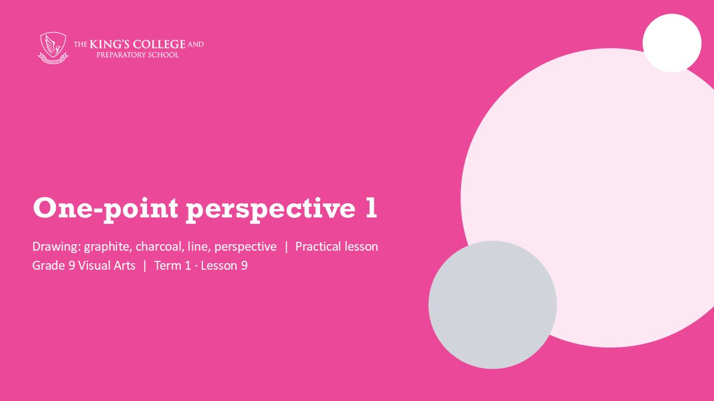

Term 1 · Lesson 9 · Practical lesson
Grid method: value
Start here
Today I will
- Map values square by square from the reference
- Use a full tonal range with smooth gradation and keep the highlights
- Remove the grid and check proportion
Think first
Squint at the photo. Where are the darkest darks and the lightest lights?
Words to Know
| Word | Meaning |
|---|---|
| Value | How light or dark a tone is. |
| Tonal mapping | Matching each value shape in the reference to the same value in your drawing, square by square. |
| Tonal range | The spread of values in a drawing, from the lightest light to the darkest dark. |
| Gradation | A smooth, gradual change from light to dark. |
| Highlight | The lightest spot, where the light hits most directly. |
Slides

Videos
Notes
Mapping tones square by square; full value range.
Shading a grid drawing
- Lightest first: Lay a light HB tone over everything except the highlights.
- Build the mid-tones: Work square by square, matching each value to the photo.
- Add the darks: Use 4B to 6B for the darkest areas, in gentle layers.
- Lose the grid: Erase grid lines as each area is shaded and blend the tone across them.
Common problems and fixes
| Problem | Fix |
|---|---|
| Everything looks grey | Push the darks darker with 6B and protect the whites. |
| Square edges show | Blend the tone across the grid lines, not inside each box. |
| Smudged hand prints | Put a scrap of paper under your drawing hand. |
| A shape looks wrong | Compare with the photo upside down, then adjust. |
Remember
Protect the whites, push the darks, blend the middle.
Practical
You need: Visual journal, grid drawing, reference photo, HB, 2B, 4B and 6B pencils, eraser, scrap paper
Complete the grid drawing with value
- In your visual journal, draw a five-step value scale from white to black (3 minutes).
- Mark the darkest and lightest areas on your grid drawing.
- Lay a light tone over everything except the highlights.
- Build the mid-tones square by square, comparing with the photo and your value scale.
- Add the darkest darks in layers with 4B or 6B.
- Erase the grid lines as you go, check proportion one last time and sign lightly.
Assessment
Assessed (Term 1 practical): grid drawing.
Test yourself
- What is tonal mapping?
- Why build the darks in layers?
- When do you erase the grid lines?
Show answers
1. Matching each value shape in the reference to the same value in your drawing, square by square. 2. Hard pressure makes shiny grooves that do not erase or blend. 3. As you shade each area, blending the tone across them.
Finished early?
Value strip check
Make a value strip and use it to check your grid drawing.
- Draw a strip of seven boxes in your visual journal.
- Shade from white (paper) to the darkest black you can make with 6B, building darks in layers.
- Hold the strip next to your grid drawing: does your drawing have all seven values?
- Write one place in your drawing where you will push the darks darker.